#Load Tidyverse
library(tidyverse)
#load dplyr
library(dplyr)
#load ggplot2
library(ggplot2)Plotting Normal Curve in R
dnorm() is a useful tool for plotting a normal distribution (or a variable with a normal distribution)
Lets use dnorm() and ggplot() to create and draw a variable (IQ_values) that is thought to have a normal distribution in the real world
Create a Variable for the x-axis (Call it IQ)
IQ_values <-seq(40,160,1) #This creates a a sequence of 121 numbers from 40 to 160Take/check for the mean and standard deviation of variable x_values
length(IQ_values) #counts the number of values in x_values[1] 121mean(IQ_values) #takes the mean of x_values[1] 100Space IQ_values with the “agreed” standard deviation for IQ (i.e. 15)
IQ_sd <-seq(40,160,15)#creates 9 standard deviation values from 40The code creates ggplot for normal probability density function with mean 100 and standard deviation of 15
ggplot(NULL, aes(x=IQ_values, y=dnorm(IQ_values,m=100,s=15)))+
geom_line()+
labs(x="IQ", y="f(IQ)")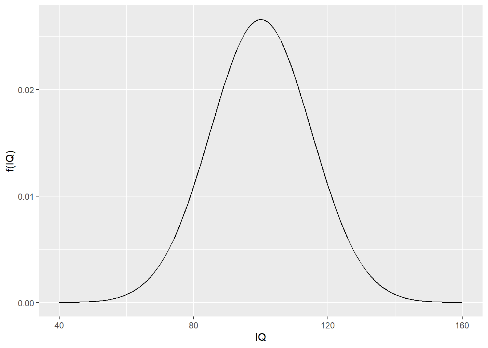
Rescale the IQ_values axis to ignore the default values by ggplot and insert the actual values for IQ_values i.e. from 40 with increments of 15
ggplot(NULL, aes(x=IQ_values, y=dnorm(IQ_values,m=100,s=15)))+
geom_line()+
labs(x="IQ", y="f(IQ)")+
scale_x_continuous(breaks=IQ_sd, labels=IQ_sd)#adds the labels we want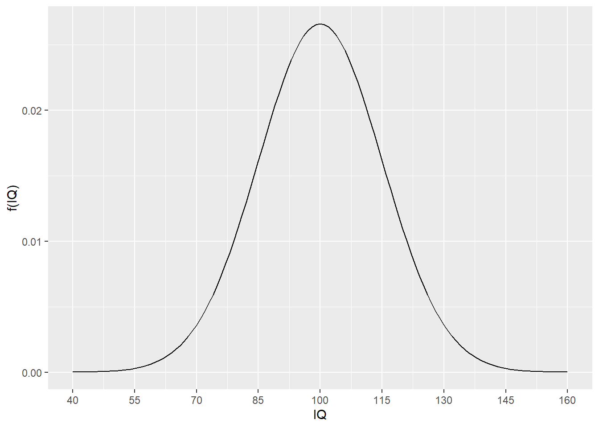
We can also generate a variable that is guaranteed to be normally distributed
We use the rnorm() function to generate values that are normally distributed
Syntax for rnorm() is rnorm(n,m,s) where:
- n is number of observations
- m is mean of observations
- s is standard deviation of observations
Example
generate 19000 random values that are normally distributed with mean 25 and standard deviation 45
Assign the observations or values to a variable V_norm
V_norm <-rnorm(19000, m=25, sd=45)
(V_mean <-mean(V_norm))[1] 24.77346(V_sd <-sd(V_norm)) #Verifies the standard deviation of V_norm[1] 45.34484Plot V__norm using ggplot: Option 1
ggplot(NULL, aes(x=V_norm, y=dnorm(V_norm,m=25,s=45)))+
geom_line()+
labs(x="V_norm", y="f(V_norm")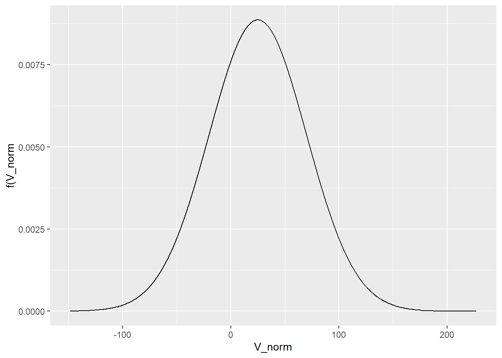
Plot V_norm using ggplot: Option 2
ggplot(NULL, aes(x=V_norm, y=dnorm(V_norm,m=25.54519,s=44.83144)))+
geom_line()+
labs(x="IQ", y="f(IQ)")+
scale_x_continuous(breaks=V_sd, labels=V_sd)#adds the labels we want
Cumulative Density Function
The cumulative density function (CDF) in R pnorm(x,m,s) returns the probability of a score or observation less than x in a variable with a normal distribution with mean m and standard deviation s (i.e. a variable with a normal probability density function)
Remember that the CDF represents the area under the probability density function (PDF) for a variable with a normal distribution. Also remember that the total area under the PDF equals 1 (or 100%). So the probability for a score less than a value for the variable on the x-axis is given by the following code in R: pnorm(x,m,s)
pnorm(100,m=100,s=15)[1] 0.5Code above returns the probability of a score less than 100 (i.e. \(P(X<=x)\)) for a normally distributed variable with mean 100 and standard deviation 15
pnorm(85,100,15) #returns probability of getting a value less than 85[1] 0.1586553To find the probability of a score/value greater than 85 use argument lower.tail. It has default value TRUE
lower.tail = TRUEmeans “less than”lower.tail = FALSEmeans “greater than”
pnorm(85,m=100,s=15, lower.tail=TRUE)#returns probability of getting a value LOWER than 85[1] 0.1586553pnorm(85,m=100,s=15, lower.tail=FALSE)#returns probability of getting a value ABOVE 85[1] 0.8413447Notice both probabilities add up to 1 (or 100%)
0.1586553+0.8413447[1] 1We can also find the probability of a score between a lower bound and an upper bound e.g. probability of a score between 85 and 100
Method 1 - using two pnorm() functions
pnorm(100, m=100, s=15, lower.tail=TRUE) - pnorm(85, m=100, s=15, lower.tail=TRUE)[1] 0.3413447We can illustrate the workings of the two pnorm() functions
Method 2 - Using tigerstats package
We first install a package called tigerstats
Then we use pnormGC()
#install.packages("tigerstats")
library("tigerstats")Give the probability of a score between 85 and 100 i.e. \(P(85 < X < 100)\)
pnormGC(c(85,100), region="between", m=100,s=15)[1] 0.3413447Give the probability of a score between 85 and 100 and plot it
pnormGC(c(85,100), region="between", m=100,s=15,graph=TRUE)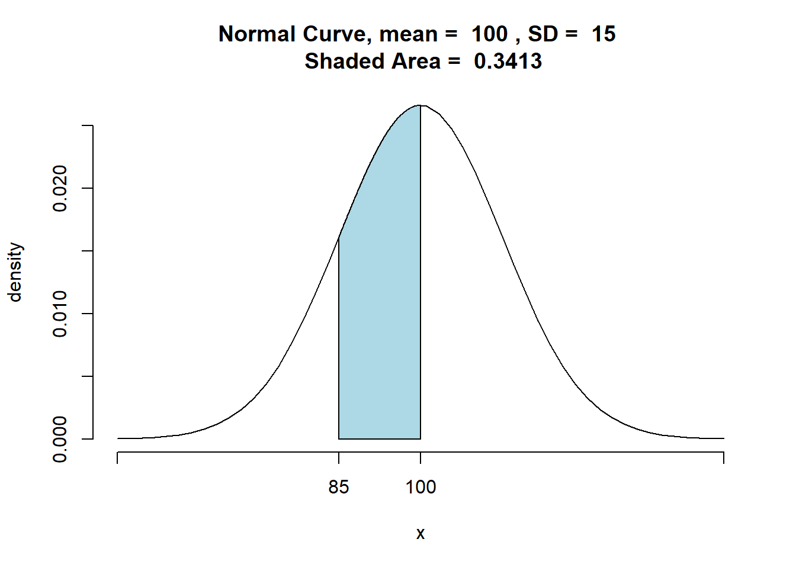
[1] 0.3413447Other Examples using Method 2
EX 1
Give the probability of a score between 20 and 50
pnormGC(c(20,50), region="between", m=100,s=15)[1] 0.0004290121Give the probability of a score between 20 and 50 and plot it
pnormGC(c(20,50), region="between", m=100,s=15,graph=TRUE)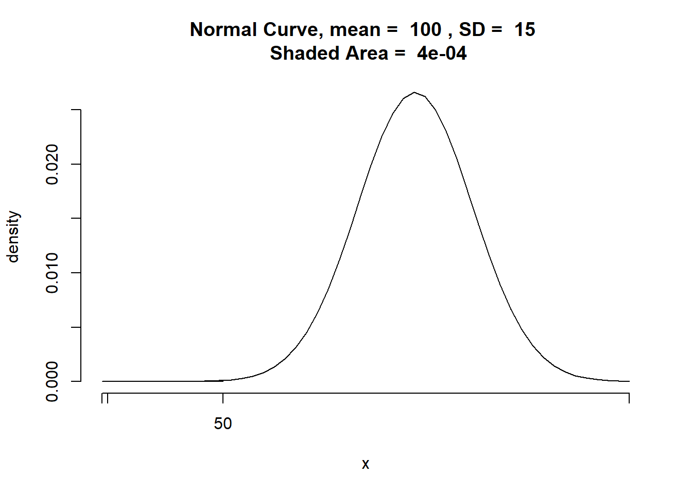
[1] 0.0004290121EX 2
Give the probability of a score between 20 and 125
pnormGC(c(20,125), region="between", m=100,s=15)[1] 0.9522096Give the probability of a score between 20 and 125 and plot it
pnormGC(c(20,125), region="between", m=100,s=15,graph=TRUE)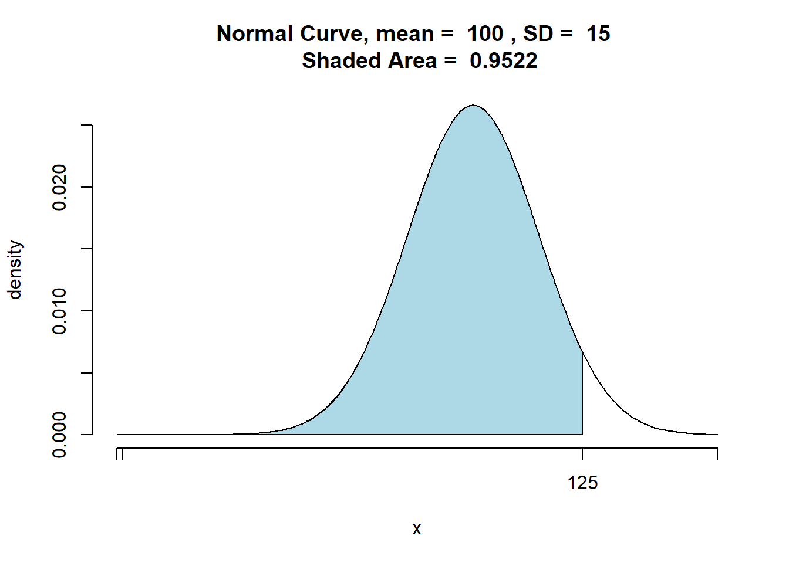
[1] 0.9522096EX 3
Give the probability of a score between 100 and 150
pnormGC(c(100,150), region="between", m=100,s=15)[1] 0.4995709Give the probability of a score between 20 and 50 and plot it
pnormGC(c(100,150), region="between", m=100,s=15,graph=TRUE)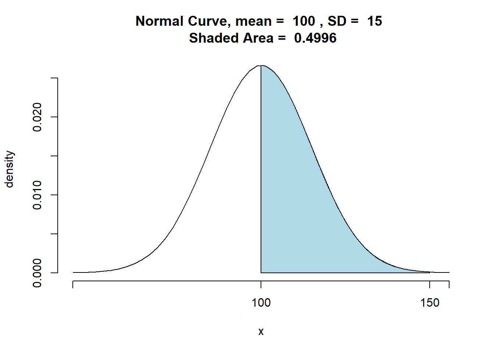
[1] 0.4995709EX 4 - Most people (68%) are said to have an IQ score of between 85 and 115
Give the probability of a score between 85 and 115
pnormGC(c(85,115), region="between", m=100,s=15)[1] 0.6826895Give the probability of a score between 20 and 50 and plot it
pnormGC(c(85,115), region="between", m=100,s=15,graph=TRUE)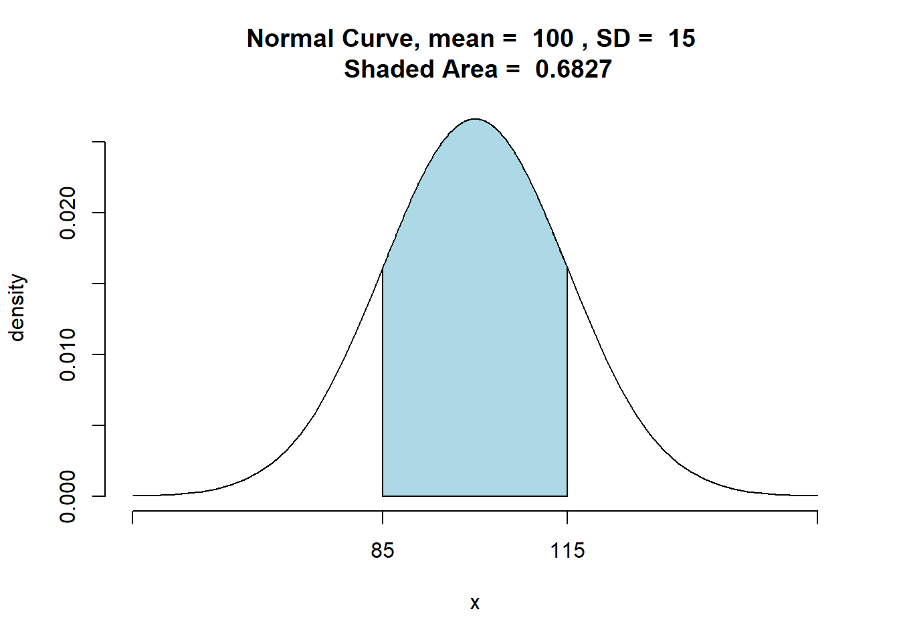
[1] 0.6826895Quantiles of normal distributions
The qnorm() function is the inverse of pnorm().
If you give qnorm() and area, it will return the score that cuts off that area (to the left) in the specified normal distribution
The area of the normal curve for IQ scores less than the mean is 0.5
pnorm(100, m=100, sd=15)[1] 0.50.5 (or 50%) says that the score 100 is the 50th percentile (median)
pnorm(123, m=100, sd=15)[1] 0.93740310.9374031 says that the score 123 is the 93.37th percentile
pnorm(160, m=100, sd=15)[1] 0.99996830.9999683 says that the score 160 is the 99.999th percentile
Albert Einstein is said to have an IQ score of 160 which is clearly an outlier in the normal distribution of IQ scores
So if we know the percentile, we can compute the number that sits at that percentile using qnorm() or qnormGC() (from the tigerstats package)
Example
We know that the probability that a score is less than 85 is 0.1586553 which means that the 15.86th percentile is 85
pnorm(85, m=100, s=15)[1] 0.1586553So 85 is the score that cuts off that area (0.1586553 or 15.86% of the total area under that particular normal curve) to the left
Note that you can interpret probability (0.1586553) as percentile (15.86th percentile) and also as percentage of total area under particular normal curve (15.86%)
So for the area 0.1586553 under normal curve with m=100 and sd=15:
qnorm(0.1586553,m=100,sd=15)[1] 85We see that the 15.86553rd percentile is 85
Lets use the qnormGC (in the tigerstats package) to find that number
qnormGC(0.1586553, region="below", m=100, sd=15)[1] 85qnormGC(0.1586553, region="below", m=100, sd=15, graph=TRUE) #graphs it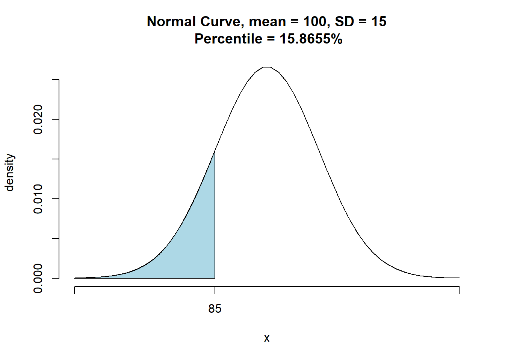
[1] 85For the area 0.5 (or 50%) under the normal curve with m=100 and sd=15:
qnormGC(0.5, region="below", m=100, sd=15)[1] 100qnormGC(0.5, region="below", m=100, sd=15, graph=TRUE) #graphs it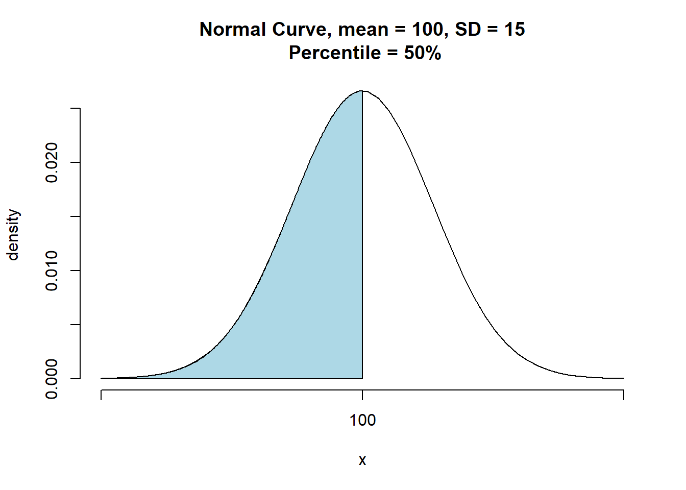
[1] 100So the 50th percentile is 100 - meaning 50% of all the scores for the variable with mean 100 and standard deviation 15 are under 100
For the area 0.9999683 under normal curve with m=100 and sd=15:
qnormGC(0.9999683, region="below", m=100, sd=15)[1] 159.9968qnormGC(0.9999683, region="below", m=100, sd=15, graph=TRUE) #graphs it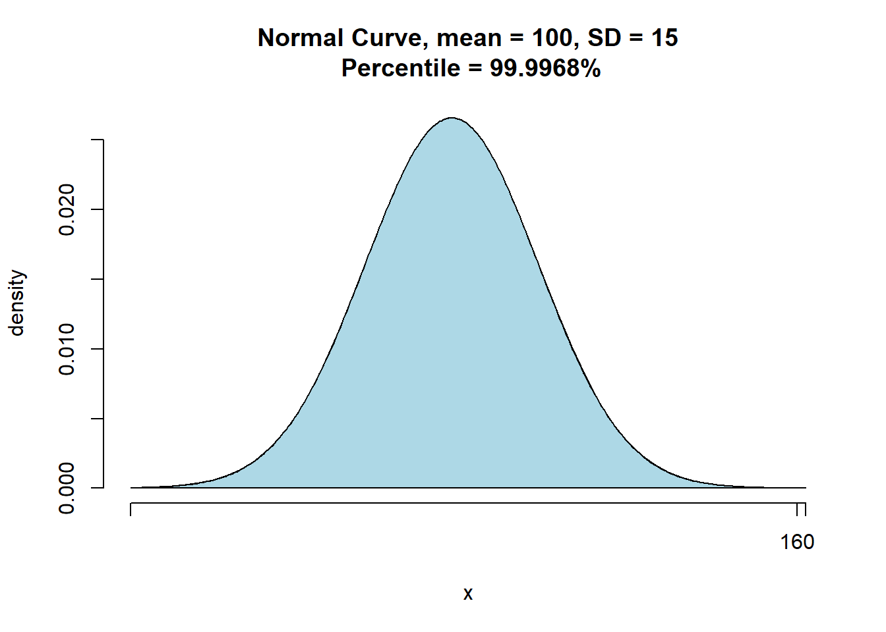
[1] 159.9968So the 99.9999683rd percentile is 159.9 or 160 - meaning 99.9999683rd of all the scores for the variable with mean 100 and standard deviation 15 are under 159.9 - which is why we think Albert Einstein is a genius
Statisticians are sometimes concerned with the 25th percentile (1st quartile) the 50th percentile (2nd quartile), 75th percentile (3rd quartile), and 100th percentile (4th quartile)
To find the 1st, 2nd, 3rd and 4th quartiles for a normally distributed variable with mean 100 and standard deviation 15:
qnorm(c(0.25,0.5,0.75,1.00), m=100, sd=15)[1] 89.88265 100.00000 110.11735 Infround(qnorm(c(0.25,0.5,0.75,1.00), m=100, sd=15))[1] 90 100 110 InfTo find the 0th percentile, 25th percentile,50th percentile,75th percentile, and 100 percentile for a normally distributed variable with mean 100 and standard deviation 15:
qnorm(c(0, 0.25,0.5,0.75,1.00), m=100, sd=15)[1] -Inf 89.88265 100.00000 110.11735 Infround(qnorm(c(0, 0.25,0.5,0.75,1.00), m=100, sd=15))[1] -Inf 90 100 110 InfNote that the 0th percentile is minus infinity, and the 100th percentile is plus infinity. These numbers (\(-\infty\) and \(+\infty\)) suggest that the CDF never completely touches the x-axis nor reaches a maximum. Thus the tails of the normal curve are said to be asymptotic to the x-axis.
The standard normal distribution in R
A normally distributed variable can be converted into a variable with a standard normal distribution by generating the Z-scores for each observation
The standard normal distribution in R is a member of the normal distribution family where the mean is 0 and the standard deviation is 1
The Z-score numbers make the variable a variable with a standard normal distribution which means that its mean is 0 and its standard deviation is 1
Working with variables with standard normal distributions is easy in R: when we use the norm() family functions we do not specify a mean and standard deviation the defaults are 0 and 1
Examples
Find the density value for the value 3 for normal variable with mean 4 and standard deviation 2.5
pnorm(3, m=4,s=2.5) #base R[1] 0.3445783pnormGC(3,m=4,s=2.5) #Using pnormGC in tigerstats package[1] 0.3445783Find density value for the value 2 for a variable with standard normal distribution
pnorm(2) #If you do not specify mean and sd, R assumes standard normal[1] 0.9772499pnorm(2,m=0,s=1) #You can choose to specify mean and sd[1] 0.9772499Find the 25th, 50th and 75th percentiles for a normal variable with mean 4.2 and standard deviation 1.1
qnorm(c(.25,.50,.75), m=4.2, s=1.1)[1] 3.458061 4.200000 4.941939Find the 25th, 50th and 75th percentiles for a standard normal variable
qnorm(c(.25,.50,.75))[1] -0.6744898 0.0000000 0.6744898Notice the median (= mean and mode in a standard normal) is 0
Generate 7 observations for a normally distributed variable ensure the mean is approximately 3 and standard deviation is 2.3 assign results to variable normal_variable
normal_variable <-rnorm(7, m=3,s=2.3)
mean(normal_variable)[1] 3.978793sd(normal_variable)[1] 1.981435Generate 7 observations for a standard normal variable. Check the mean and standard deviation assign results to variable st_normal_variable
st_normal_variable <-rnorm(7)
mean(st_normal_variable)[1] 0.02329216sd(st_normal_variable)[1] 1.054263In the real world, when we deal with small samples the normal distribution is not very appropriate
You pay a price for using a small sample: you have a large standard error
For small samples, the sampling distribution of the means is a member of the t-distribution family.
Unlike the normal distribution family distinguished by mean and standard deviation, members of the t-distribution family are distinguished by degrees of freedom
Like in the case for the normal family - dnorm(), pnorm(), qnorm(), rnorm(), we also have the functions for the t-distribution family
dt()- density functionpt()- cumulative density functionqt()- quantilert()- random number generation with t-distribution
Sampling Using R # Simple Random Sampling
Case 1: Where the population has a sequence of numbers
Example 1:
Given a population of size \(N=5\), list all of the possible samples of size \(n=3\) with R
Solution - use combn() function
combn(x=1:5, m=3) #1:5 suggests that the values in the population of interest are sequential starting with the number 1 [,1] [,2] [,3] [,4] [,5] [,6] [,7] [,8] [,9] [,10]
[1,] 1 1 1 1 1 1 2 2 2 3
[2,] 2 2 2 3 3 4 3 3 4 4
[3,] 3 4 5 4 5 5 4 5 5 5Given a population of size \(N=7\), list all of the possible samples of size \(n=4\) with R
Solution - use combn() function
combn(x=1:7, m=4) [,1] [,2] [,3] [,4] [,5] [,6] [,7] [,8] [,9] [,10] [,11] [,12] [,13] [,14]
[1,] 1 1 1 1 1 1 1 1 1 1 1 1 1 1
[2,] 2 2 2 2 2 2 2 2 2 2 3 3 3 3
[3,] 3 3 3 3 4 4 4 5 5 6 4 4 4 5
[4,] 4 5 6 7 5 6 7 6 7 7 5 6 7 6
[,15] [,16] [,17] [,18] [,19] [,20] [,21] [,22] [,23] [,24] [,25] [,26]
[1,] 1 1 1 1 1 1 2 2 2 2 2 2
[2,] 3 3 4 4 4 5 3 3 3 3 3 3
[3,] 5 6 5 5 6 6 4 4 4 5 5 6
[4,] 7 7 6 7 7 7 5 6 7 6 7 7
[,27] [,28] [,29] [,30] [,31] [,32] [,33] [,34] [,35]
[1,] 2 2 2 2 3 3 3 3 4
[2,] 4 4 4 5 4 4 4 5 5
[3,] 5 5 6 6 5 5 6 6 6
[4,] 6 7 7 7 6 7 7 7 7Note that for the syntax you specify m not n
Case 2: case were population does not follow a sequence
Example 1**
Given a population of size \(N=5\), where \(X_1 = 2, X_2=5, X_3 = 8, X_4 = 12, X_5=13\), use R to list all of the possible samples of size \(n=3\).
#install.packages("PASWR2")
library("PASWR2")srs(c(2,5,8,12,13), 3) [,1] [,2] [,3]
[1,] 2 5 8
[2,] 2 5 12
[3,] 2 5 13
[4,] 2 8 12
[5,] 2 8 13
[6,] 2 12 13
[7,] 5 8 12
[8,] 5 8 13
[9,] 5 12 13
[10,] 8 12 13OR
popvalues <-c(2,5,8,12,13)
possible_samples<- srs(popvalues,3)
t(possible_samples) #Transpose the values [,1] [,2] [,3] [,4] [,5] [,6] [,7] [,8] [,9] [,10]
[1,] 2 2 2 2 2 2 5 5 5 8
[2,] 5 5 5 8 8 12 8 8 12 12
[3,] 8 12 13 12 13 13 12 13 13 13Example 2
Given a population of size \(N=7\), where \(X_1 = 3, X_2=-3, X_3 = -8, X_4 = 17, X_5=-13,X_6= 23, X_7=109\) use R to list all of the possible samples of size \(n=4\).
srs(c(3,-3,-8,17,13,23,109), 4) [,1] [,2] [,3] [,4]
[1,] 3 -3 -8 17
[2,] 3 -3 -8 13
[3,] 3 -3 -8 23
[4,] 3 -3 -8 109
[5,] 3 -3 17 13
[6,] 3 -3 17 23
[7,] 3 -3 17 109
[8,] 3 -3 13 23
[9,] 3 -3 13 109
[10,] 3 -3 23 109
[11,] 3 -8 17 13
[12,] 3 -8 17 23
[13,] 3 -8 17 109
[14,] 3 -8 13 23
[15,] 3 -8 13 109
[16,] 3 -8 23 109
[17,] 3 17 13 23
[18,] 3 17 13 109
[19,] 3 17 23 109
[20,] 3 13 23 109
[21,] -3 -8 17 13
[22,] -3 -8 17 23
[23,] -3 -8 17 109
[24,] -3 -8 13 23
[25,] -3 -8 13 109
[26,] -3 -8 23 109
[27,] -3 17 13 23
[28,] -3 17 13 109
[29,] -3 17 23 109
[30,] -3 13 23 109
[31,] -8 17 13 23
[32,] -8 17 13 109
[33,] -8 17 23 109
[34,] -8 13 23 109
[35,] 17 13 23 109Systematic sampling
Recall that systematic sampling is done when a statistician has the population of N units/members and desires to select every kth value of that population
To obtain a systematic sample,
Step 1: choose a sample size n, calculate N/n and let k be the closest integer to N/n
Step 2: Find a random number between 1 and k to be the starting point for sampling
Step 3: Build out the sample elements
Example 1
Systematic sampling in R
Suppose a researcher wants a systematic sample of size 10 from a list / population of 1000 members
\[N=1000\] \[n=10\] \[k = N/n: 1000/10 = 100\]
\(K=100\) implies every 100th member in the population will be chosen.
To pick the first member, select any number between 1 and 100
We can task R to select the first member and also generate the systematic sample list as follows:
seq(sample(1:100,1),1000,100) [1] 28 128 228 328 428 528 628 728 828 928Example 2
Systematic sampling in R
Suppose a student wants a systematic sample of size 20 from a list / population of 1000 members
\[N=1000\] \[n=20\] \[k = N/n: 1000/20 = 50\]
\(K=50\) implies every 50th member in the population will be chosen.
We can task R to select the first member and also generate the systematic sample list as follows:
seq(sample(1:50,1),1000,50) [1] 44 94 144 194 244 294 344 394 444 494 544 594 644 694 744 794 844 894 944
[20] 994set.seed(2) #Used to produce same/reproducible results
FULL <-seq(sample(1:25,1),1000,25)
#We can then find the mean and standard deviation of FULL
mean(FULL)[1] 508.5sd(FULL)[1] 292.2613According to the CLT:
- The sampling distribution of the mean is approximately normal if the size of the ramdom sample is large enough (large enough means about 30 or more)
- The mean of the sampling distribution of the mean is the same as the population mean
- The standard deviation of the sampling distribution of the mean (also known as the standard error of the mean) is equal to the population standard deviation divided by the square root of the sample size
- If the population that supplied the sample is not normal, the sampling distribution of the mean will be a normally distributed variable so long as the sample size is large enough - for practical purposes, 30 or more
- If the population that supplied the sample is normal, then the sampling distribution will be a normally distributed variable for any sample size
Note that the population that supplied the samples does not have to be normally distributed for the CLT to hold. The key requirement is that the size of the samples drawn from the populationis large enough
The CLT specifies (approximately) that large samples will be normally distributed
In the real world, when we deal with small samples the normal distribution is not very appropriate
You pay a price for using a small sample: you have a large standard error
For small samples, the sampling distribution of the means is a member of the t-distribution family.
Unlike the normal distribution family distinguished by mean and standard deviation, members of the t-distribution family are distinguished by degrees of freedom
Like in the case for the normal family - dnorm(), pnorm(), qnorm(), rnorm(), we also have the functions for the t-distribution family
dt()- density functionpt()- cumulative density functionqt()- quantilert()- random number generation with t-distribution
%Session Info%
sessionInfo()R version 4.2.2 (2022-10-31 ucrt)
Platform: x86_64-w64-mingw32/x64 (64-bit)
Running under: Windows 10 x64 (build 19045)
Matrix products: default
locale:
[1] LC_COLLATE=English_United States.utf8
[2] LC_CTYPE=English_United States.utf8
[3] LC_MONETARY=English_United States.utf8
[4] LC_NUMERIC=C
[5] LC_TIME=English_United States.utf8
attached base packages:
[1] grid stats graphics grDevices utils datasets methods
[8] base
other attached packages:
[1] PASWR2_1.0.5 tigerstats_0.3.2 abd_0.2-8 mosaic_1.8.4.2
[5] mosaicData_0.20.3 ggformula_0.10.4 Matrix_1.6-0 lattice_0.20-45
[9] nlme_3.1-160 lubridate_1.9.2 forcats_1.0.0 stringr_1.5.0
[13] dplyr_1.1.2 purrr_1.0.1 readr_2.1.4 tidyr_1.3.0
[17] tibble_3.2.1 ggplot2_3.4.2 tidyverse_2.0.0
loaded via a namespace (and not attached):
[1] Rcpp_1.0.11 class_7.3-20 digest_0.6.33 utf8_1.2.3
[5] ggforce_0.4.1 R6_2.5.1 ggridges_0.5.4 labelled_2.12.0
[9] evaluate_0.21 e1071_1.7-13 ggstance_0.3.6 pillar_1.9.0
[13] rlang_1.1.1 rstudioapi_0.15.0 rmarkdown_2.23 labeling_0.4.2
[17] htmlwidgets_1.6.2 polyclip_1.10-4 munsell_0.5.0 proxy_0.4-27
[21] compiler_4.2.2 xfun_0.39 pkgconfig_2.0.3 manipulate_1.0.1
[25] htmltools_0.5.5 tidyselect_1.2.0 mosaicCore_0.9.2.1 fansi_1.0.4
[29] tzdb_0.4.0 withr_2.5.0 MASS_7.3-58.1 jsonlite_1.8.4
[33] gtable_0.3.3 lifecycle_1.0.3 magrittr_2.0.3 scales_1.2.1
[37] cli_3.6.1 stringi_1.7.12 farver_2.1.1 generics_0.1.3
[41] vctrs_0.6.3 tools_4.2.2 glue_1.6.2 tweenr_2.0.2
[45] hms_1.1.3 fastmap_1.1.1 yaml_2.3.7 timechange_0.2.0
[49] colorspace_2.1-0 knitr_1.43 haven_2.5.3